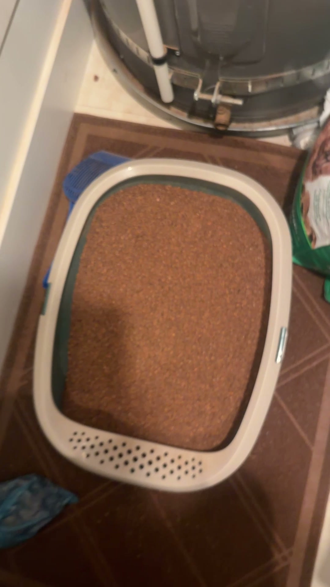
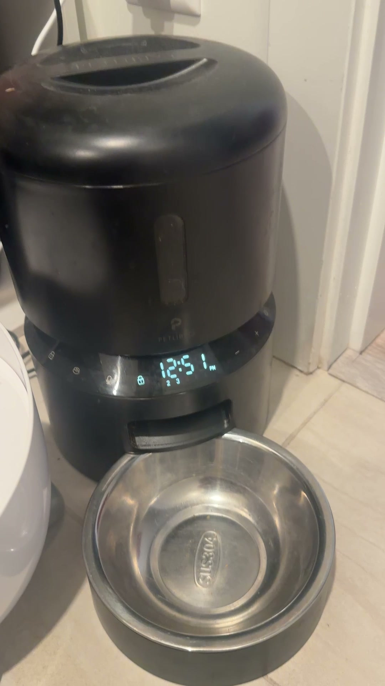
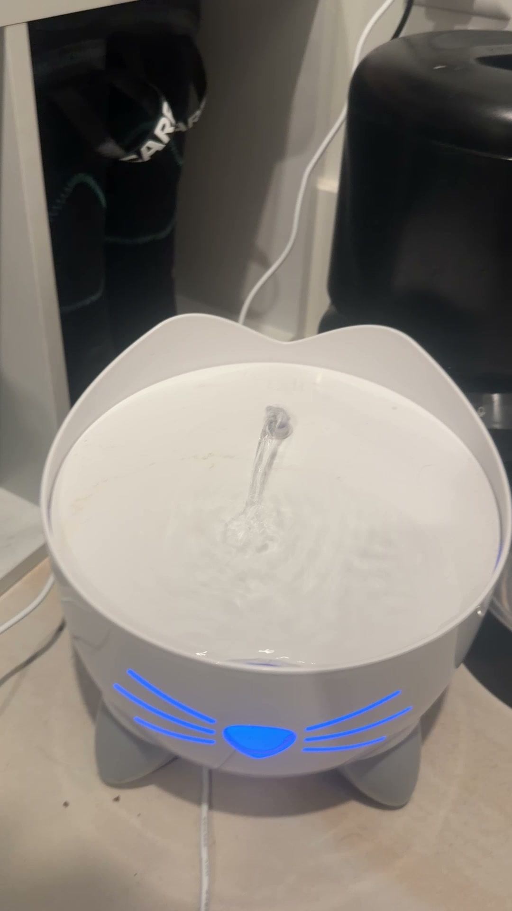
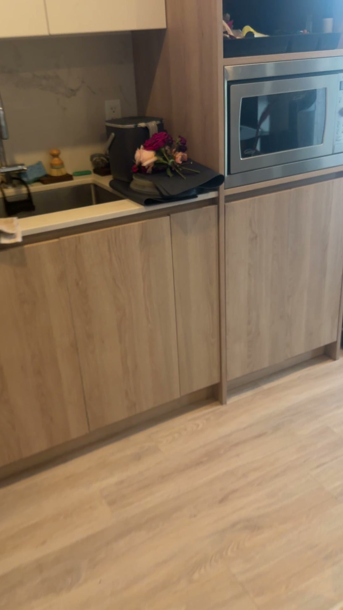
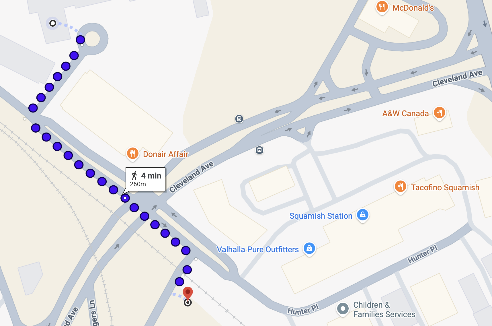
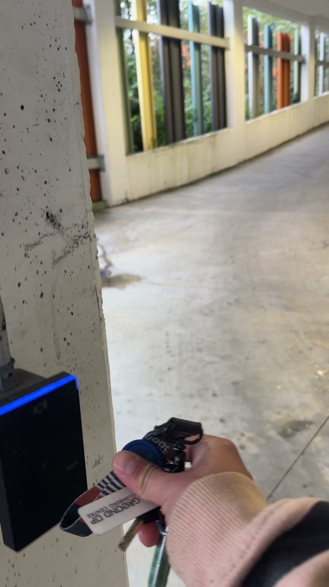
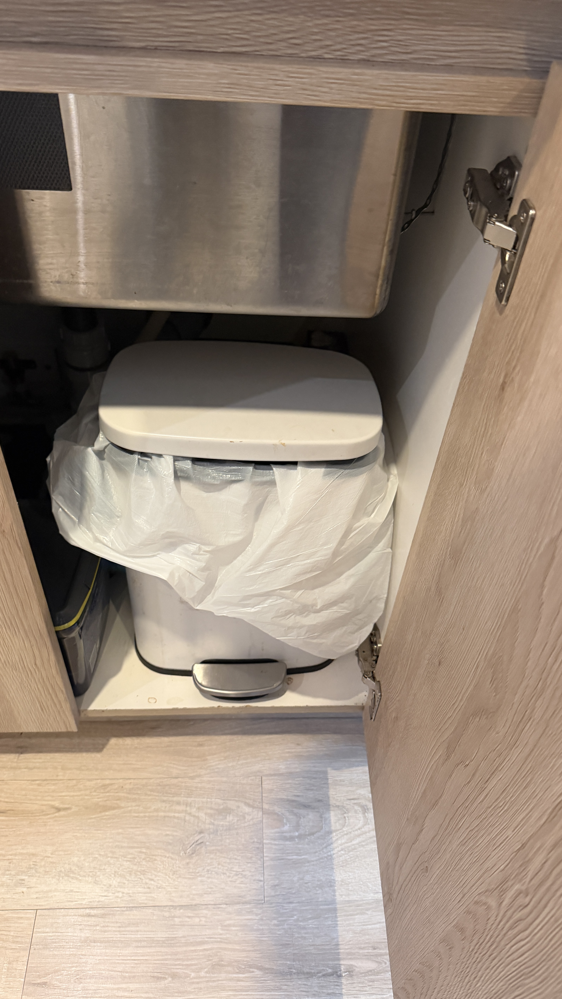
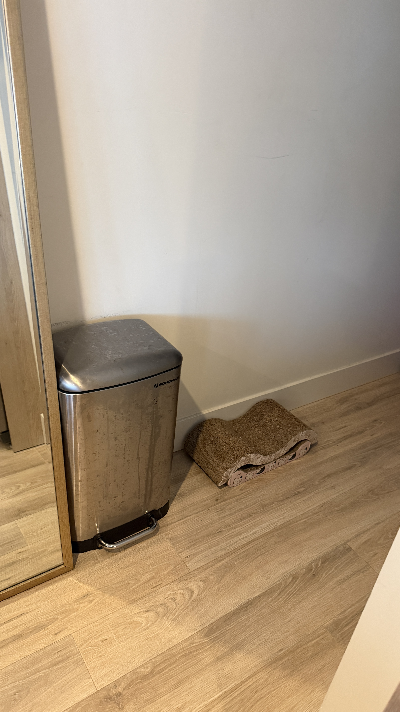

Scoop litter

Scoop once a day, usually first thing, then rake flat.
Top up the litter every couple of days. No full tray wash needed during this stay.
Cat care, parking, and home essentials.
Usual feeding times; adjust to suit your day.
Scoop & rake litterOnce daily, usually first thing.Top up the litter every couple of days.
Serve wet foodAbout 1/5 can (~30 g) · Friskies Shredded
Dry food (automatic)1 portion · ORIJEN Original
Dry food (automatic)1 portion.
Rinse the fountain & change the waterOnce a week.

Scoop once a day, usually first thing, then rake flat.
Top up the litter every couple of days. No full tray wash needed during this stay.
Serve about 1/5 can (~30 g) of Friskies Shredded once a day, usually around 8 am.
Use the preset schedule: 1 portion at 2 pm and 1 portion at 8 pm. Check the food level through the window.
Away overnight? Set the feeder to dispense dry food 3 times a day. Nika can skip wet food for a couple of days.


Unplug and rinse inside at the sink, then change the water.
A red flash means low water. No filter change needed during this stay.
Find the treats on the top shelf of the cabinet below the microwave.
Give dental treats or Catit treats. Keep all treats combined to no more than 10% of Nika's daily calories. Check the calories on the packaging.

Park in the Loggers Lane spot shown on the map; visitor parking is often full.
You can park for up to 72 hours. Move your car to another spot in the same lot before that time is up.


Use the key fob at the garage reader to open the door.
Use the fob reader on the left of the garbage room door to get in.

Garbage: small white bin under the sink. Bags are there too.

Recycling: silver bin behind the couch.